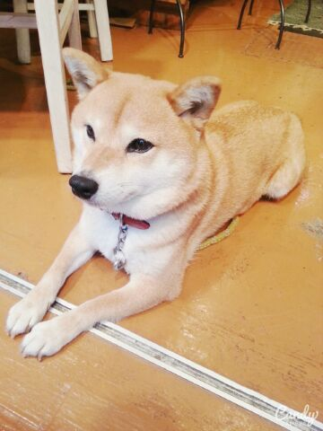
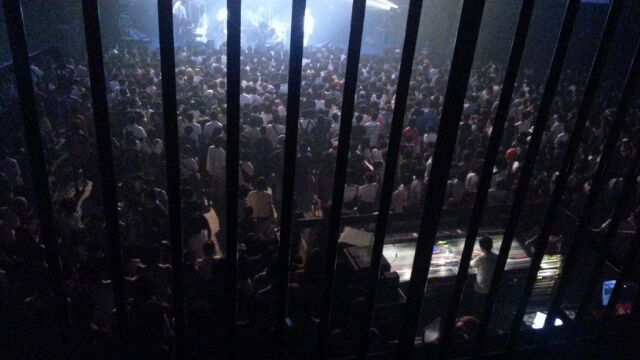
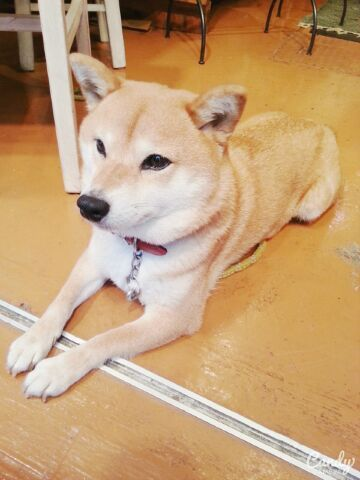
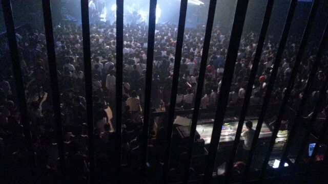

| 2014/09 03 Wed | \神宮 日焼けしたー？/ & \音楽の甲子園/ Rotty |
こんにちわ .♪ ろってぃーです.
\\\真夏の全国ツアー ラスト神宮が終わりました///
ありがとうございました！
あの景色は忘れません！！！
大きなステージで 野外で 汗かきまくってliveをしていることを 子供の頃からずっと夢描いてきて、何だか不思議です！
ファンの皆様、スタッフの皆様ありがとうございました☆ミ
liveが終わったあと、何人かの人から「まひろの歌とダンスを見ていると、まひろの想いが伝わった。最高だったよ。」
「もっと自分も頑張らないとって思えた」と言ってもらえました(T-T) 嬉しい... 笑
そう思って頂けるliveができて良かったです.
柴犬も嬉しゅうキモチやで
わん

可愛すぎるやろ 笑
帽子屋さんの看板犬.
＿＿＿＿＿＿＿＿＿＿＿＿＿＿
そしてそして!!!!!!!

『閃光ライオット』に行ってきました！
皆さん知ってますか？
Rotty夢さんは 私が出てたこともあって知ってくださる方もいるんですけど、
閃光ライオットとは SONY MUSIC主催の「 10代限定の 音楽の甲子園 !!! 」 と言われている夏フェスです！！！
全国から勝ち進んできた 10組のバンドマンたちが、ファイナルステージで東京の新木場にて 最高のliveを見せてくれました！
優勝 準優勝とかありますけど、どのバンドも本当に最高で最高で感動し、沢山の刺激をくれました\★/
私は4年前かな？
14才の頃に 1万組以上の中から ラストなん十組のところまで行ったのですが、後一歩のところで 私は勝ち進めなかったです。 本当に今でも悔しいです^^
その頃の自分を 思い出させてくれました！
やっぱり音楽って最高だな！って思いました＼(^^)／
あっ、 井上さゆりと一緒に行ってきました！！
「 大人は何もわかってない、話を聞いてくれない、だから僕は自分で強くなりました 」って言ってから歌い始めたバンドは感動したな〜。
だから この人たちも 全部歌にして想いをぶつけてるんだろうな、、って思いました！
とりあえず話の終わりが見えないので、ここで終わりにします！
以上っ ろってぃーでした ヽ(・∀・)ノ
のし.！
そう思って頂けるliveができて良かったです.
柴犬も嬉しゅうキモチやで
わん

可愛すぎるやろ 笑
帽子屋さんの看板犬.
＿＿＿＿＿＿＿＿＿＿＿＿＿＿
そしてそして!!!!!!!

『閃光ライオット』に行ってきました！
皆さん知ってますか？
Rotty夢さんは 私が出てたこともあって知ってくださる方もいるんですけど、
閃光ライオットとは SONY MUSIC主催の「 10代限定の 音楽の甲子園 !!! 」 と言われている夏フェスです！！！
全国から勝ち進んできた 10組のバンドマンたちが、ファイナルステージで東京の新木場にて 最高のliveを見せてくれました！
優勝 準優勝とかありますけど、どのバンドも本当に最高で最高で感動し、沢山の刺激をくれました\★/
私は4年前かな？
14才の頃に 1万組以上の中から ラストなん十組のところまで行ったのですが、後一歩のところで 私は勝ち進めなかったです。 本当に今でも悔しいです^^
その頃の自分を 思い出させてくれました！
やっぱり音楽って最高だな！って思いました＼(^^)／
あっ、 井上さゆりと一緒に行ってきました！！
「 大人は何もわかってない、話を聞いてくれない、だから僕は自分で強くなりました 」って言ってから歌い始めたバンドは感動したな〜。
だから この人たちも 全部歌にして想いをぶつけてるんだろうな、、って思いました！
とりあえず話の終わりが見えないので、ここで終わりにします！
以上っ ろってぃーでした ヽ(・∀・)ノ
のし.！
コメント(304)
2014/09/03 19:18